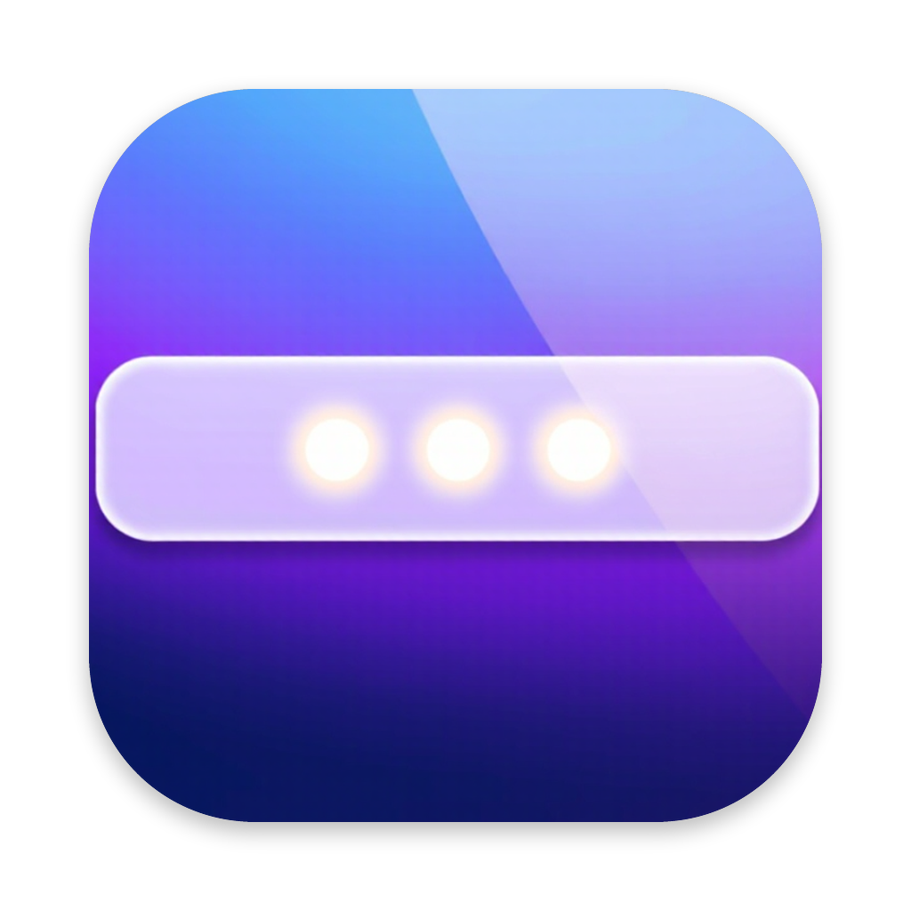
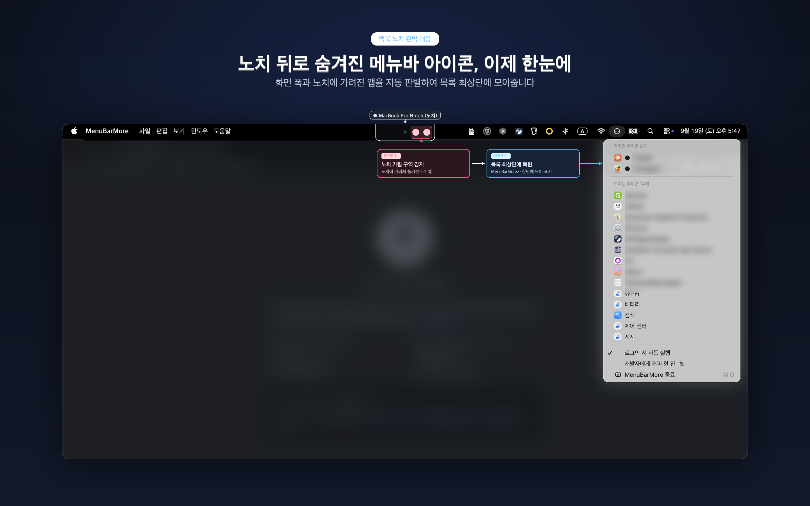

MenuBarMore
노치와 좁은 폭 때문에 가려진 메뉴바 아이콘에 접근하세요
이 앱은 맥 앱스토어에서 받을 수 없습니다. 아래에서 직접 내려받으세요 — Apple Developer ID로 서명하고 공증받은 정식 배포본입니다. 앱스토어에 없는 이유
동작 화면

앱 소개
맥북 노치 뒤로 메뉴바 아이콘이 사라진 적이 있으신가요? 아이콘을 몇 개만 더 설치하면 왼쪽 아이콘들이 노치에 파묻혀 영영 누를 수 없게 됩니다.
메뉴바 아이콘이 넘칠 때 쓰는 도구는 이미 여럿 있습니다. 대부분은 아이콘을 화면 밖으로 밀어내는 방식입니다. 이 방식은 메뉴바 가용 폭에 의존하기 때문에, 아이콘을 계속 설치하면 결국 다시 깨집니다.
MenuBarMore는 원본 아이템을 건드리지 않습니다. 모든 앱의 메뉴바 아이템을 목록으로 보여주고, 고른 항목을 대신 눌러 줍니다. 메뉴바 폭과 무관하게 동작하므로 아이콘을 더 설치해도 깨지지 않습니다.
주요 기능
- 가려진 아이콘 자동 판정 — 노치 구간과 화면 경계를 계산해 못 누르는 아이콘을
●표시로 목록 위쪽에 모아 줍니다 - 원본 유지 — 아이콘을 옮기거나 숨기지 않습니다. 다른 도구와 함께 써도 충돌하지 않습니다
- 즉시 열리는 메뉴 — 목록을 미리 준비해 두므로 클릭하면 기다림 없이 펼쳐집니다
- 앱별 아이콘과 이름 — 제어 센터처럼 한 앱이 여러 아이템을 가진 경우도 각각 구분해 보여줍니다
- 로그인 시 자동 실행 — 한 번 켜 두면 맥을 켤 때마다 준비됩니다
- 한국어 · 영어 지원
개인정보
MenuBarMore는 데이터를 수집하지 않고, 저장하지 않고, 외부로 보내지 않습니다. 네트워크에 접속하지 않습니다. 손쉬운 사용 권한은 메뉴바 아이템을 읽고 대신 누르는 데에만 씁니다.
특징
폭에 의존하지 않음
아이콘을 화면 밖으로 밀어내지 않습니다. 메뉴바가 아무리 좁아도, 아이콘을 아무리 많이 설치해도 그대로 동작합니다.
기다림 없는 메뉴
아이콘에 마우스가 닿는 순간 목록을 미리 준비합니다. 클릭하면 바로 펼쳐집니다.
서명과 공증
Apple Developer ID로 서명하고 공증을 받습니다. 서명 이후 1바이트라도 바뀌면 macOS가 실행을 막습니다.
왜 맥 앱스토어에 없나
맥 앱스토어는 App Sandbox가 필수입니다. 샌드박스 안에서는 다른 앱의 메뉴바 아이템을 읽는 호출이 전부 차단됩니다. 손쉬운 사용 권한을 허용해도 마찬가지입니다. 직접 측정한 결과, 샌드박스를 켜자 성공하던 열거 19건이 0건이 되었습니다.
Bartender · BetterTouchTool · Keyboard Maestro · Alfred가 모두 앱스토어 밖에서 배포되는 것과 같은 이유입니다.